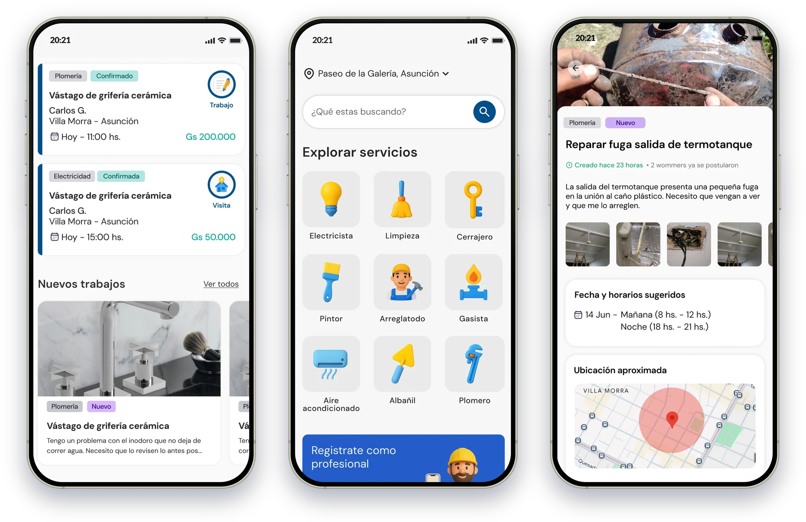
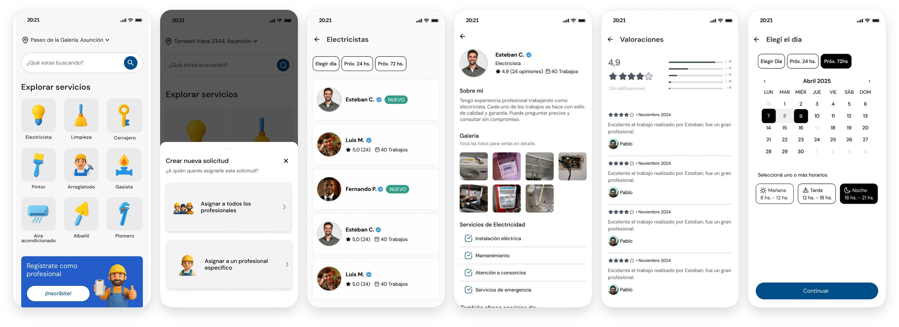
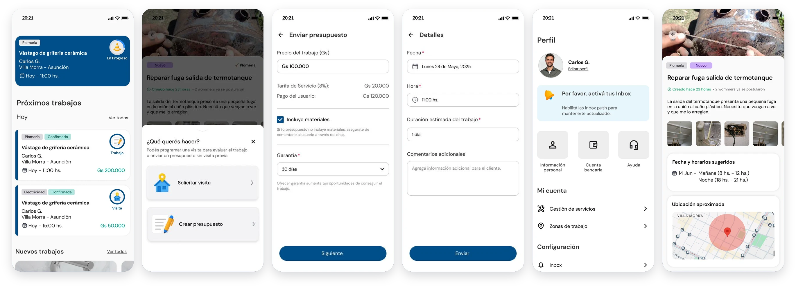
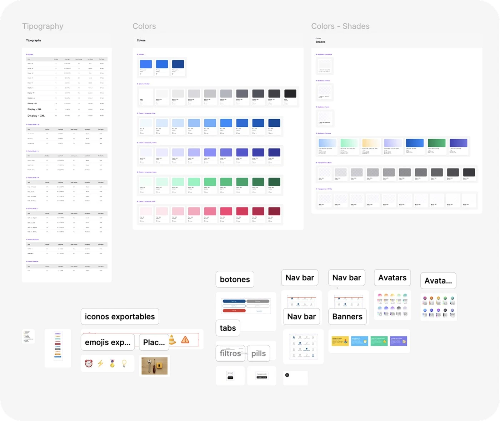

Case study · Marketplace · Home services in Paraguay
Yuda: building trust in home services.
As Lead Product Designer, I designed Yuda end to end: an app for people who need a plumber, an electrician or a cleaner, an app for the professionals who do the work, and the design system behind both.

Context & Problem
In Paraguay, finding a reliable professional ran on word of mouth.
Hiring home services was mostly informal: people relied on word of mouth, Facebook groups or local contacts. The result was uncertainty, lack of trust and inefficiency, for users and for professionals alike. The question: how do we design trust into a marketplace from scratch?
What I set out to do:
- TrustVerified profiles and reviews users perceive as fair.
- SimplicityA booking flow simple enough for professionals with low digital literacy.
- ActivationA structured onboarding that gets professionals working.
What I designed:
- User appFind, compare and book trusted professionals.
- Professional appManage jobs, send quotes and schedule visits.
- OnboardingRegistration and profile setup for professionals.
- Design SystemBuilt from scratch in Figma, ready for engineering.
Research & Discovery
Different types of users, the same lack of trust.
We started by understanding both sides of the marketplace in Asunción, then validated our hypotheses with usability tests on the professional app.
Users
Hard to find trustworthy professionals. Unclear pricing and communication, and no reviews or quality indicators.Professionals
Few digital channels to find new clients, no clear way to manage payments or reviews, and a hard time showcasing their credibility.Validation process.
6 service professionals interviewed in Asunción, Paraguay.
6 homeowners interviewed, on the other side of the marketplace.
- Users prefer WhatsApp-like communication.Real-time back-and-forth is a key part of how they work.
- Verified profiles and transparent reviews build trust.Users want a rating system they perceive as fair.
- A simpler booking flow reduces drop-offs.Even for professionals with low digital literacy.
- Structured onboarding increases activation.Professionals get to their first job faster.
Design process
Two apps, one platform.
One side finds and books help; the other manages the work. Both share the same visual language and the same rules.
Decisions that shaped the product.
Users had little context to compare professionals, and struggled to trust who they were letting into their home. I prioritized transparency through verified badges, review summaries and flexible booking options.
- Trust before actionVerified badges and review summaries before booking.
- Flexible bookingSend a request to every professional, or to one specific person.
- Urgency at a glanceProfessionals see what needs action first.

Put urgent jobs first for professionals.
Professionals had to act fast on new requests while managing ongoing jobs, a context-switching problem that hurt response rates. I designed a dashboard that surfaces urgent actions first, with a streamlined quoting flow and visit scheduling.

Design process
The system behind both apps.
With two apps and a small team, inconsistency was a real risk. I built Yuda's design system from scratch in Figma (color tokens, typography, components and interaction rules), documented and ready for engineering.

- One token, many usesA single source of truth for both apps.
- Component-first thinkingFaster iteration after every round of testing.
- Handoff-ready documentationFaster design-to-dev delivery.
After design
Test early, and locally.
After the first design stages we tested the professional app with real users. We also looked for technology barriers during onboarding and profile setup.
saw value in the product.
The proposition landed: nearly everyone understood what Yuda was for, and why they'd use it instead of word of mouth.
completed the quoting flow without any help.
The hardest task in the test: more than a third (37%) needed help at some step. Quoting became the clearest place to improve.
said they'd use it over other similar products.
A strong signal for an early product competing with deep-rooted habits like WhatsApp and Facebook groups, with room to grow.
Where quoting got stuck
To quote accurately, professionals needed to dig deeper into some details of the job, and to do that they needed to talk to the client: through a chat, or with access to the client's WhatsApp. It matched what we'd seen in research: real-time back-and-forth is part of how they work.
Prototype.
User app: the hiring flow, simplified.
Professional app: from a new job to a visit request.
Outcomes
What changed, and what I learned.
Working directly with users in Paraguay helped me design not just an app, but a system of trust and opportunity for both sides.
- Faster task completionMeasured in usability tests across core user and professional flows.
- Better professional registrationAfter the onboarding redesign.
- Clarity and trustPositive user feedback on both.
- Transparency beats quantityTransparency drives trust more than the number of reviews.
- Test early and locallyIt was key to validating product-market fit.
- One processStrategy, research and visual design, combined.
Next steps
What comes next.
- 01 Measure activation after launch.How many registered professionals get to their first job, and how fast.
- 02 Iterate on quoting.Give professionals the job details they need to quote accurately, and test again.
- 03 Design a chat section.So professionals can ask the client what they need before quoting, without leaving the app.